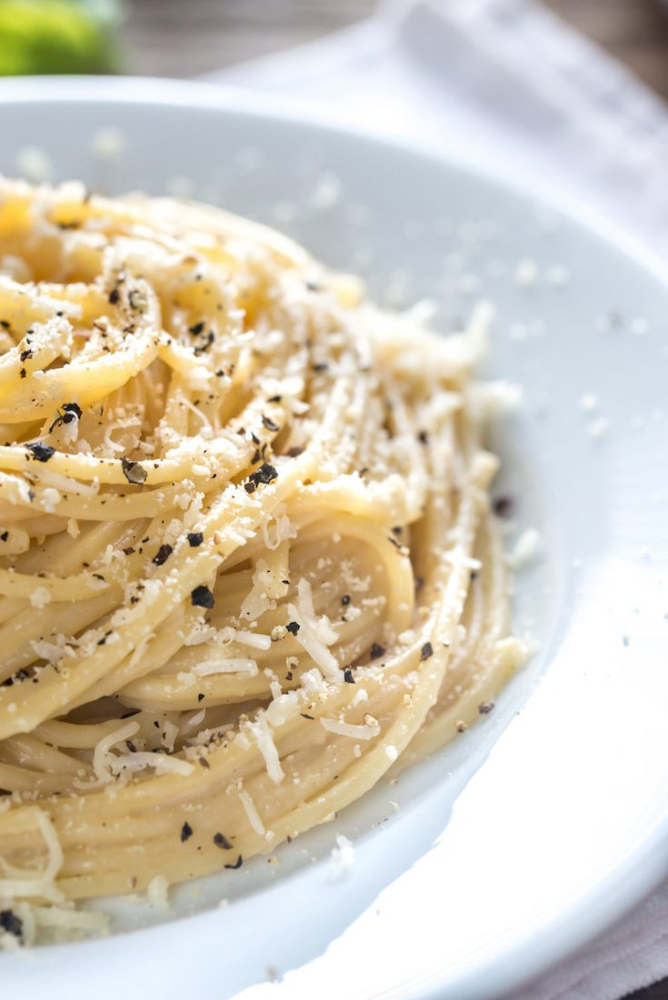

Cacio e Pepe

Description
Cacio e Pepe is a very simple and delicious dish. It only
contains 5 ingreidents and its name literally translates to
"cheese and pepper". It is very easy in execution and will wow
any of your guests in its taste.
Ingredients
- Bucatini pasta
- Parmesano Reggiano cheese
- Pecorino Romano cheese
- Freshly ground black peppercorn
- High quality butter
Steps
- Freshly grate equal amounts Parmesan and Pecorino cheese.
- Bring a large stock pot of heavily salted water up to a boil.
- Place a half pound of dry pasta in the stock pot and cook according to the package's instructions.
- In a medium-sized skillet over medium heat, add 2 tablespoons of butter and let foam.
- Add some freshly cracked ground black pepper in the skillet and let it sautee in the melted butter.
- Remove the pasta one minute before it is fully cooked.
- Reserve a cup of the salted pasta cooking water and drain the pasta.
- Add the pasta to the skillet with the foaming butter and black pepper.
- Stir the pasta in the melted butter and black pepper and begin adding small amounts of grated cheese blend.
- Once all the cheese is added, begin adding the reserved pasta water until the desired consistency is achieved.
- Place in a warm bowl and top with any remaining cheese and additional freshly cracked black pepper.